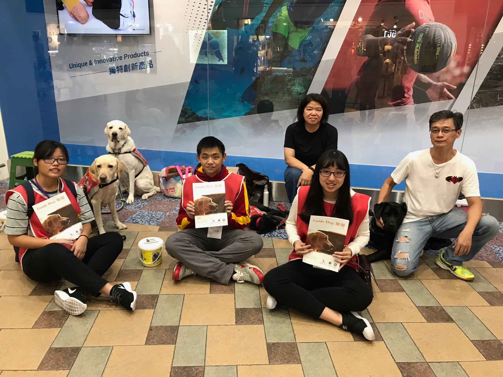
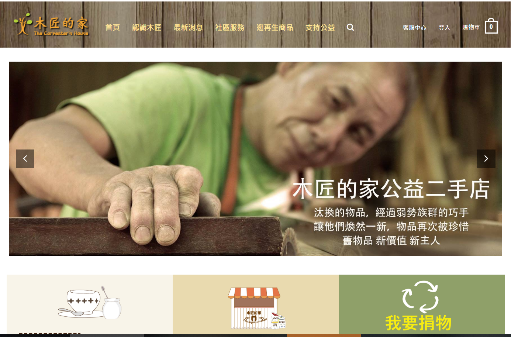
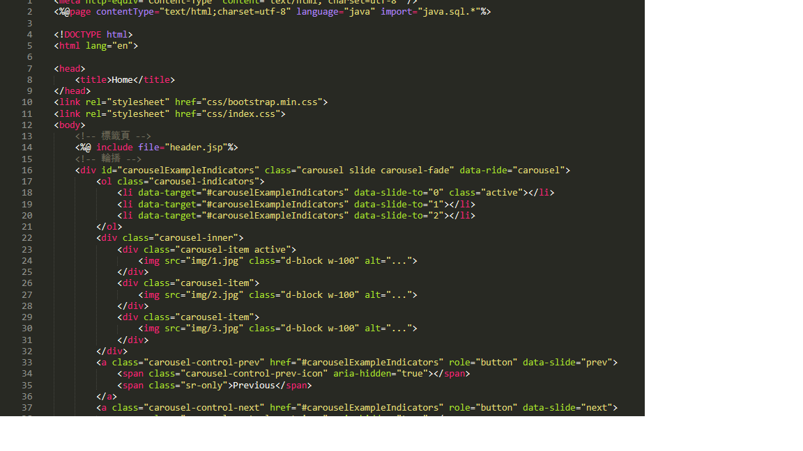
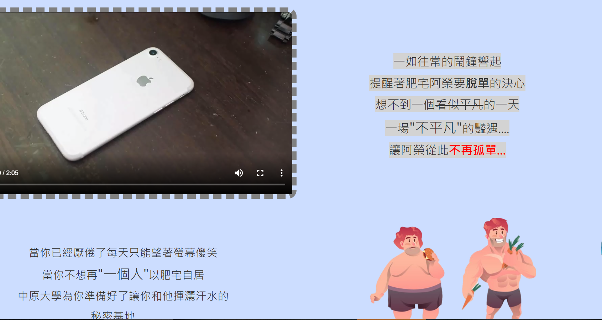
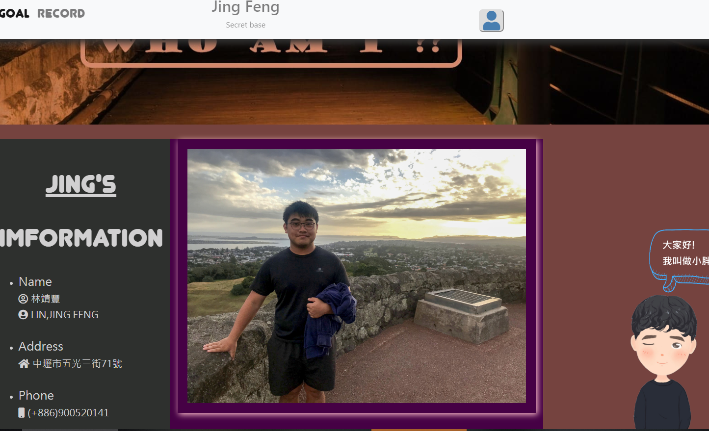

Introduction
-All time is no time when it is past.-
I am Jing-feng Lin, Major in the Department of Information Management at Chung Yuan Christian University.
The personality is outgoing and considerate. It has always been the first impression of others.
Experience | Work
管理學-盲人的雙眼
導盲犬宣導及募資專案
負責工作 : 活動現場宣傳 期末專案報告

◼ 學習運用管理、組織、領導、控制完成這項專案
◼ 協助導盲犬協會讓民眾更加了解導盲犬
◼ 致力導盲犬友善店家的增加並為導盲犬訓練爭取資金
我們在人來人往的商店街，向大家宣導三不一問的概念:
不餵食： 絕對不要以任何人類的食物吸引或餵食導盲犬。
不干擾：不要在使用者未同意的狀況下，任意干擾或撫摸導盲犬行徑工作。
不拒絕：立法院三讀通過法案，保護導盲犬可以自由進出公共場所、搭乘交通運輸工具。
主動詢問：當你看到視障者朋友在公共空間猶豫徘徊不前時，希望您主動詢問是否需你協助的地方。
企業概論-木不瑕給
木匠的家二手木重生企劃
負責工作 : 再生木的販售企劃 影片及專案報告

◼ 規劃並執行二手木製品的販售企畫
◼ 負責與廠商方溝通並每周上台報告
◼ 商品網站的架設與宣傳影片的籌畫
木匠的家-再生木製品，這個專案的核心概念是"人休習，物修惜"
透過販賣再生木製品，在一次向大家宣導，"再利用"對於環境保護，
可以是以很大的貢獻的，將家中要丟棄的家具，再一次藉由師傅們的手，變成好看又實用的木製品
網路程式設計-購物網站
購物網站架設專案
負責工作 : 資料庫建構 後臺程式設計

◼ 運用 JSP與 MYSQL 完成資料庫及購物網站的建置
◼ 統籌組員意見並統整及分配工作
◼ 負責上台報告展示購物網站的構想及執行計畫
網路程式設計-購物網站是我在接觸程式語言以來，
第一個需要與別人合作的專案，我負責的是後端的程式設計
JSP與MYsql是一個需要以邏輯來思考的語言
一開始，我花了很多的時間來研究語法
但是到後面，對於程式設計越來越得心應手
多媒體程式設計-行銷影片及網站
拍攝行銷影片及架設網站
負責工作 : 影片編劇及拍攝 網站樣式設計

◼ 影片的劇情編排及負責掌鏡拍攝
◼ 整理組員想法彙整後執行企劃
◼ 運用JS、CSS等前端技術設計網站
多媒體程式設計-行銷影片及網站
這對我來說是一個震撼彈，畢竟從沒有拍過影片
所以在一開始構思反而花了最多時間
而影片拍攝完的網站設計，更是開始了我
對於多媒體更深一層的認識
層層堆疊的div，要如何不讓網站跑板等等
對於剛接出前端的我都是寶貴的經歷
多媒體程式設計-個人網站設計
架設屬於自己的新天地
負責工作 : 網站排版及設計

◼ 整理自己資料時可以再次檢視自己
◼ 用網站向大家展示"你是誰"
◼ 運用JS、CSS等前端技術設計網站
多媒體程式設計-個人網站設計
製作這個網站讓我重新檢視自己
收集自己的資訊，看看自己在大學
比起以前的自己有了哪些的進步
Skill | Major
商管 : 企業概論、管理學、會計學、經濟學、統計學、管理數學
資訊 : 企業資料通訊、JAVA 程式設計、多媒體程式設計、資料庫管理
HTML5是取代HTML4.01，XHTML1.0和XHTML1的標準HTML，是一個標準的構建和展示萬維網上的內容
Java是一種廣泛使用的電腦程式設計語言，擁有跨平台、物件導向、泛型程式設計的特性
CSS可以用於設定頁面布局、設定頁面元素樣式、設定適用於所有網頁的全域樣式
JavaScript 是屬於用戶端的程式語言，使大多數瀏覽器達到與伺服器端程式互動的效果
MySQL是一個多使用者、多執行緒的SQL資料庫伺服器。sql是世界上最流行的和標準化的資料庫語言